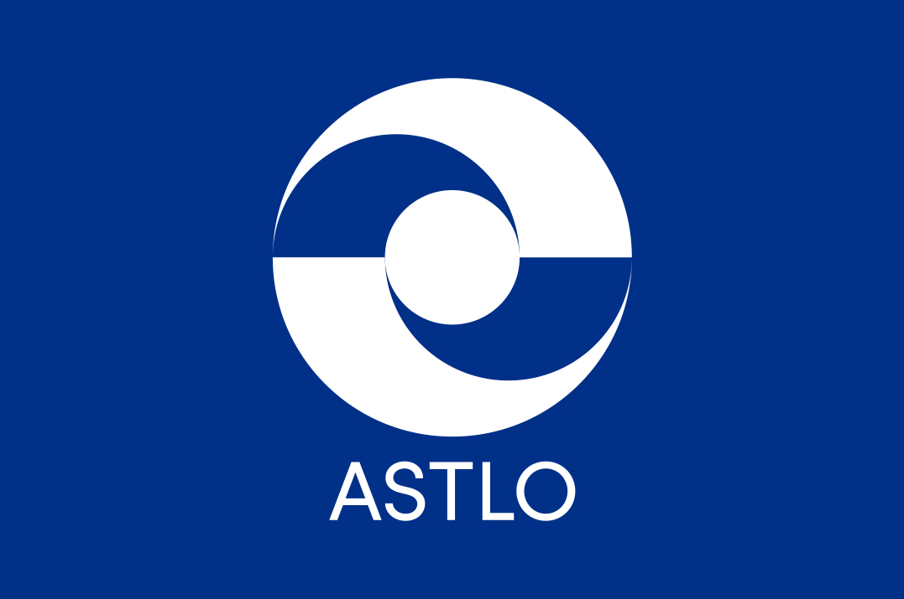
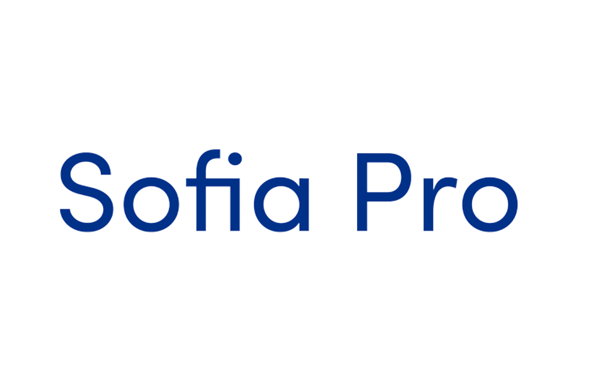

ASTLO Branding
Branding a fictional country based on a continent, in this case, the country is Astlo, located on the continent of Europe bordering France and Spain. Astlo is divided into two provinces: North and South. The main attribute that this country has is the canal; the Astlan canal which is not only the leading aspect of Astlo’s economic growth but it is also what connects the two provinces within this country. Astlo’s main characteristic is the unity that its community and geography represents, that is the reason why the branding of this country revolves around this idea of unity.


The design system is inspired by the horizontal line that cuts the logo in half. As you can see with the grid below, the horizontal line is what divides the text from the image, and the circle on the left to maintain the unity. The following shows the grid system alongside the application (Website, Magazine, Posters).